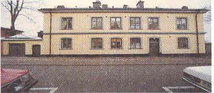
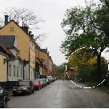
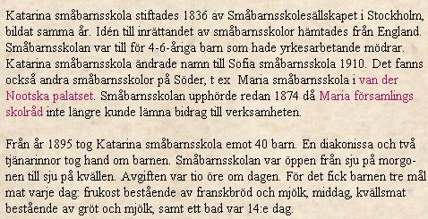

  Ur Ett berg vit vattnet, Per-Anders Fogelström, 1969: Också 31-an har sitt sammanhang med Frans Schartau. En ung skåning, Gustaf Nils Petter Sommelius,född 1801, kom i unga år till Stockholm och fick anställning i firman Bibau & Wong i vilken Schartau var delägare. Schartau tog sig an dennykomne och Sommelius menade själv att han "näst Gud, hade Schartau att tacka för sin uppkomst och framgång i världen". Sommelius' enda barn, endotter, kom senare att gifta sig med Schartaus forne bokhållare, grosshandlaren Edvard Brinck. Starten var ändå inte så lätt för Sommelius, tre gånger gick han i konkurs innan han "lyckades rättstämma sitt klaver". Det skedde i och med att han 1841 anlade Stockholms första oljeslageri vid Stadsgården. Vid sidan av detta idkade hanockså pantlånerörelse. Sommelius blev snart en förmögen man och köpte sig flera hus nere i staden, bl.a. det såkallade räntmästarehuset intill Slussplanen och Skeppsbron. Och på berget växte hans företag ut. 1865 byggdes huset mot Fjällgatan men då hade Sommelius dött tre år tidigare varför familjen Brinck övertagit rörelsen. 1888 byggdes en ny fabrik ute vidHenriksberg i Nacka och 1916 ombildades bolaget till Svenska oljeslageri AB. I dag är huset Fjällgatan 31 allt som finns kvar av den en gång så stora anläggningen vid Stadsgården. Området inköptes av staden i samband med hamnens breddning och år 1900 fick Sofia småbarnsskola flytta in i Fjällgatshuset (skolan hette då Katarina småbarnsskola). "Småbarnsskolesällskapet var en gammal och förnäm inrättning", berättar John Landquist (i "Livet i Katarina"), dess första skolor tillhörde de tidigaste av detta slag i Europa. Sällskapet hade startats 1836, dess första Söder-skola öppnades1838 i södra stadshuset (nuvarande Stadsmuseum). Avsikten var att man främst skulle ta hand om barn från fattiga hem, särskilt från hem där modern måste yrkesarbeta. Men länge lyckadesman inte riktigt i sitt uppsåt, man saknade pedagogisk insikt och sällskapet leddes av en grupp societetsdamer som gav efter för de inte alltför ideelltengagerade föreståndarinnornas önskningar. Dessa ville hellre ha barn från förmögnare hem (de ansågs mer lättskötta), de ville bara ta emot barnen halva dagen i stället för hela och de ville inte ha besvär med att servera barnen måltider. Så förlorade småbarnsskolorna sin ursprungliga karaktär och någon förändring till det bättre skedde inte förrän Landquists far, den energiskekyrkoherden i Katarina, grep in. Åren mellan 1892 och 1895 företogs en verklig revolution, de gamla lärarinnorna pensionerades och diakonissanAnna Veman fick resa utomlands för att se hur man ordnat liknande skolor på andra håll. Vidhennes återkomst skulle skolan i Katarina för första gången "ledas enligt de pedagogiska principer som sällskapets stiftare hade behövt vid upprättandetav sina skolor". År 1900 flyttades sedan skolan från de gamla slitna lokalerna vid Högbergsgatan 30 "till den rymliga solomflutna byggnaden Fjällgatan 31 med en av de underbaraste stadsutsikter någon stad i världen erbjuder" (J. Landquist). | 3. Fjällgatan 31 Huset är uppfört 1865 av skåningen Nils Petter Sommelius. Glasverandan tillkom 1881. Sommelius fick anställning i den firma Frans Schartau var delägare i och kom med tiden att själv bli en framstående industriidkare. Han gick i konkurs tre gånger innan framgången kom med det 1841 anlagda Stockholms första oljeslageri vid Stadsgården. Ett oljeslageri var en fabrik där kvarnar och stampverk användes för att pressa oljan ur linfrön. I dag är huset Fjällgatan 31 allt som finns kvar av Sommelius stora företag.
 Skolan har sedan "vunnit ett stigande rykte såsom ett av de mest moderna och förebildliga daghemmen i Norden". En österrikisk professor och barnpsykolog, Hildegard Hetzer, har kallat den "det vackraste jagöverhuvud sett som småbarnsskola". Skolan tar f.n. emot omkring 60 elever. "Rummen är ljusa och in-redningen inbjudande för barn att slå sig ned vid. Nedanför är en lekträdgård. Utsikten är överväldigande: hela storstaden utbreder sig i prakt förens blick med kyrkor, palats, parker, kajer, skepp och vatten alltifrån Mälaren i väster till inloppet mellan skogiga berg i öster. De översta fönstren i detta hus tillhör de sista som solen blänker på vid sin nedgång på kvällen."
"Det finns ett gammalt hus högst på Söder, Det är liksom vore det Stockholms öga, Kanske det fönster som solen längst dröjde kvar vid var Anna Lindhagens, man vill gärna tro så. Under några år i slutet av 1920-talet och början av 1930-talet bodde Anna Lindhagen i en liten våning högst upp i 31-an, "två vindsrum och knappt det", noterar en reporter från Vecko-Journalen som besöker henne. Egentligen bodde hon bara i detena rummet, "arbetsrummet". Det större rummet kallades "studierummet" och användes i hög gradför föredrag och kurser. Bland annat anordnades enkurs i bokbinderi för ungdomar, avgiften bestod i att eleverna hjälptes åt med att sörja för städning och eldning av rummet. I studierummet fanns en vävstol och en taffel, det var annars möblerat med en möbel från mitten av 18oo-talet samt några äldre saker. "Denna blandning var typisk för etthem på 1860-talet", berättar Anna Lindhagen för intervjuaren. "Man hade ärvt gamla möbler ochställde dem självfallet bland de nyare, utan tanke på att de ej skulle passa i stil." (Så har man också senare möblerat Stigbergets borgarrum.) Anna Lindhagen (1870-1940) var dotter till den man som framlade 1866 års stora och omvälvande stadsplan, justitieradet AlbertLindhagen. Borgmästaren Carl Lindhagen var hennes bror. Själv var hon inspektris vid Stockholms fattigvårdsnämnds fosterhemsinspektion och verksampå många områden, bl.a. en pionjär för kolonistugerörelsen. Hon var stadsfullmäktig åren1911-1923 och medlem av stadens skönhetsråd. Man kan väl också kalla henne för Fjällgatans speciella och idogt vakande skyddsängel. Vi kommer att möta henne i flera av gatans hus. |
{kind=link}